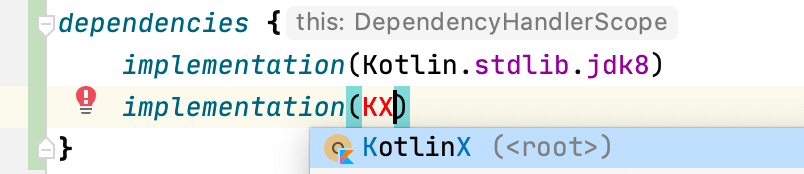
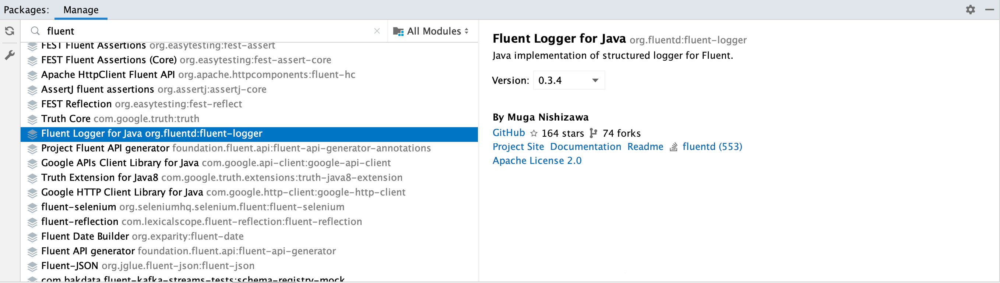

Add dependencies¶
Use built-in dependency notations¶
See Built-in Dependency Notations

refreshVersions provides read-to-use organized dependency notations for select popular libraries of the following ecosystems:
- Kotlin Multiplatform
- Kotlin/JVM
- Android
That doesn’t prevent you from using refreshVersions in a Gradle project that is not using Kotlin or is not an Android project.
You can use them in any build.gradle or build.gradle.kts file.
Here’s an example of how it looks like in the IDE:
No imports needed.

Autocomplete in IDE for easy discoverability.

You can see all the dependency objects in this directory.
Wait, what version are those dependencies using?¶
All these dependency notations specify their version as the version
placeholder (_), so refreshVersions can replace them seamlessly with the corresponding
value defined in the versions.properties file, via Gradle APIs.
The same will work for your own, non-built-in dependencies if you use that same version placeholder.
After adding a dependency that doesn’t have its version specified in the
versions.properties file yet, refreshVersions will edit it and put the
most stable recent version in it on the next Gradle sync (or any other
Gradle run).
It will also put any less stable versions as comments, allowing you to quickly upgrade if needed.
Add Gradle plugins¶
This section doesn’t apply to plugins that are configured in a
buildscript block (since these have their versions configured like
regular dependencies), but only to those that are configured solely with
a plugin id.
To add such a plugin, do as usual, but do not specify the version in the
build.gradle or build.gradle.kts file. Instead, set it up like so in
the versions.properties file:
plugin.com.apollographql.apollo=2.4.1
plugin.com.squareup.sqldelight=1.4.3
Then you can omit the plugin version in all build.gradle(.kts) of your project:
plugins {
id("com.squareup.sqldelight")
id("com.apollographql.apollo")
}
plugins {
id 'com.squareup.sqldelight'
id 'com.apollographql.apollo'
}
As you see, the convention is pretty simple. The key is the id of the plugin, prefixed by plugin.: plugin.some.plugin.id sets the version of the plugin of id some.plugin.id.
Get the version from anywhere¶
In some cases, you might need to get the version defined in the versions.properties file in a Gradle script.
For these cases, there’s the versionFor function that takes either a version key, or a full dependency notation.
Here’s a usage example with Jetpack Compose in an Android project:
import de.fayard.refreshVersions.core.versionFor
...
composeOptions {
kotlinCompilerExtensionVersion = versionFor(AndroidX.compose.ui)
}
import static de.fayard.refreshVersions.core.Versions.versionFor
...
composeOptions {
kotlinCompilerExtensionVersion = versionFor(project, AndroidX.compose.ui)
}
Using versionFor("version.androidx.compose.ui") would also work, so long as version.androidx.compose.ui is defined in the versions.properties file.
Non-built-in dependency notations¶
Generally speaking, so long as you have the version placeholder (_) in place of the version,
refreshVersions will handle it.
Below are some ways to deal with the dependency notations that are not built-in.
Using buildSrcLibs¶
The Gradle task buildSrcLibs can be used to automatically generate a Libs.kt file in the buildSrc, that will contain all the dependency notations curently used in your build.
To use it, you need to enable it:
plugins {
// See https://jmfayard.github.io/refreshVersions
id("de.fayard.refreshVersions") version "0.60.6"
}
refreshVersions {
enableBuildSrcLibs() // <-- Add this
}
plugins {
// See https://jmfayard.github.io/refreshVersions
id 'de.fayard.refreshVersions' version '0.60.6'
}
refreshVersions {
enableBuildSrcLibs() // <-- Add this
}
Then you can use the command ./gradlew buildSrcLibs to generate accessors for your dependencies
$ ./gradlew buildSrcLibs
> Task :buildSrcLibs
new file: buildSrc/build.gradle.kts
new file: buildSrc/src/main/kotlin/Libs.kt
The generated file will look like this:
/**
* Generated by `$ ./gradlew buildSrcLibs`
*/
object Libs {
const val guava: String = "com.google.guava:guava:_"
const val guice: String = "com.google.inject:guice:_"
}
Because this file uses the version placeholder (_), it is compatible with refreshVersions!
Read more: gradle buildSrcVersions.
Using Package Search from JetBrains¶
JetBrains offers the plugin Package Search, it is compatible with both IntelliJ IDEA and Android Studio. It also has a website
Package Search provides a nice UX to add a dependency:

Can you use it with refreshVersions?
Sure, just use the version placeholder (_).
Using Gradle Versions Catalogs¶
Gradle 7+ comes with its own feature for centralizing dependencies: Versions Catalogs.
With Versions Catalog, you have a file like gradle/libs.versions.toml where you can centralize all your dependencies and benefit from typesafe accessors in your build.gradle[.kts] file.
We support updating this version catalog. If you want to keep versions in the versions.properties file, you can use the version placeholder (_).
Using the libraries.gradle pattern¶
An older approach to centralize dependencies is to have a libraries.gradle file:
ext.libraries = [ // Groovy map literal
spring_core: "org.springframework:spring-core:3.1",
junit: "junit:junit:4.10"
]
apply(from = "../libraries.gradle")
dependencies {
compile libraries.spring_core
testCompile libraries.junit
}
Does that work with refreshVersions too? Yes, just use the version placeholder (_):
ext.libraries = [ // Groovy map literal
- spring_core: "org.springframework:spring-core:3.1",
+ spring_core: "org.springframework:spring-core:_",
- junit: "junit:junit:4.10"
+ junit: "junit:junit:_"
]